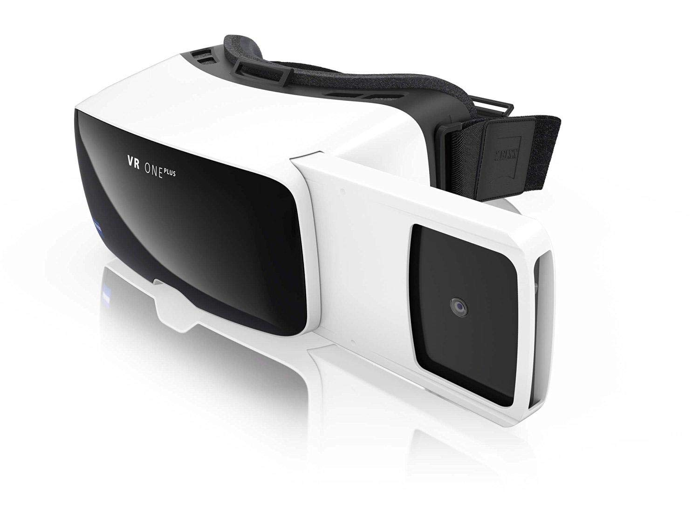
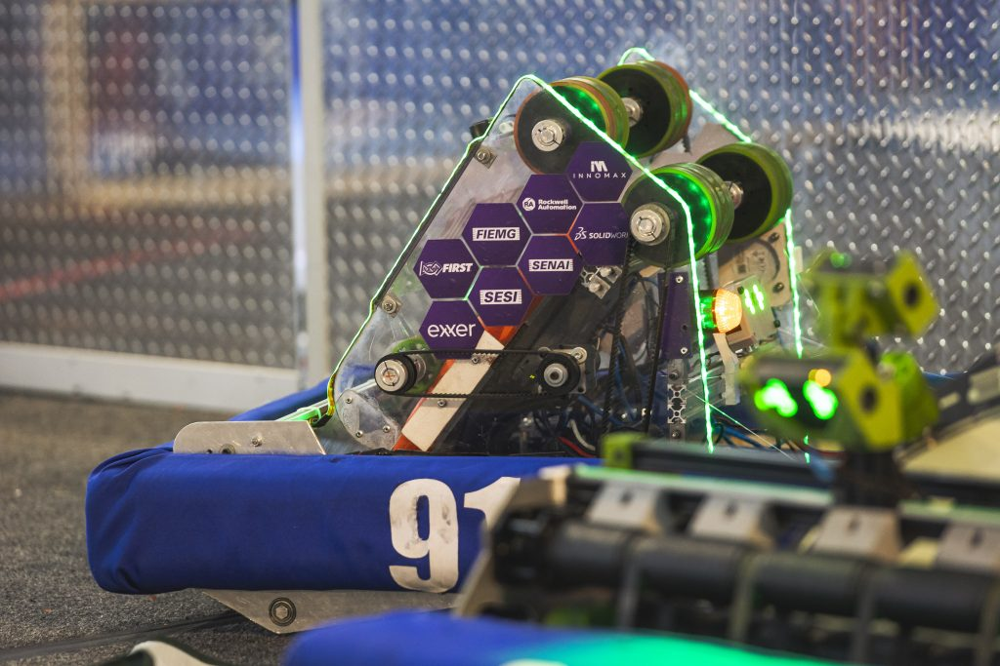
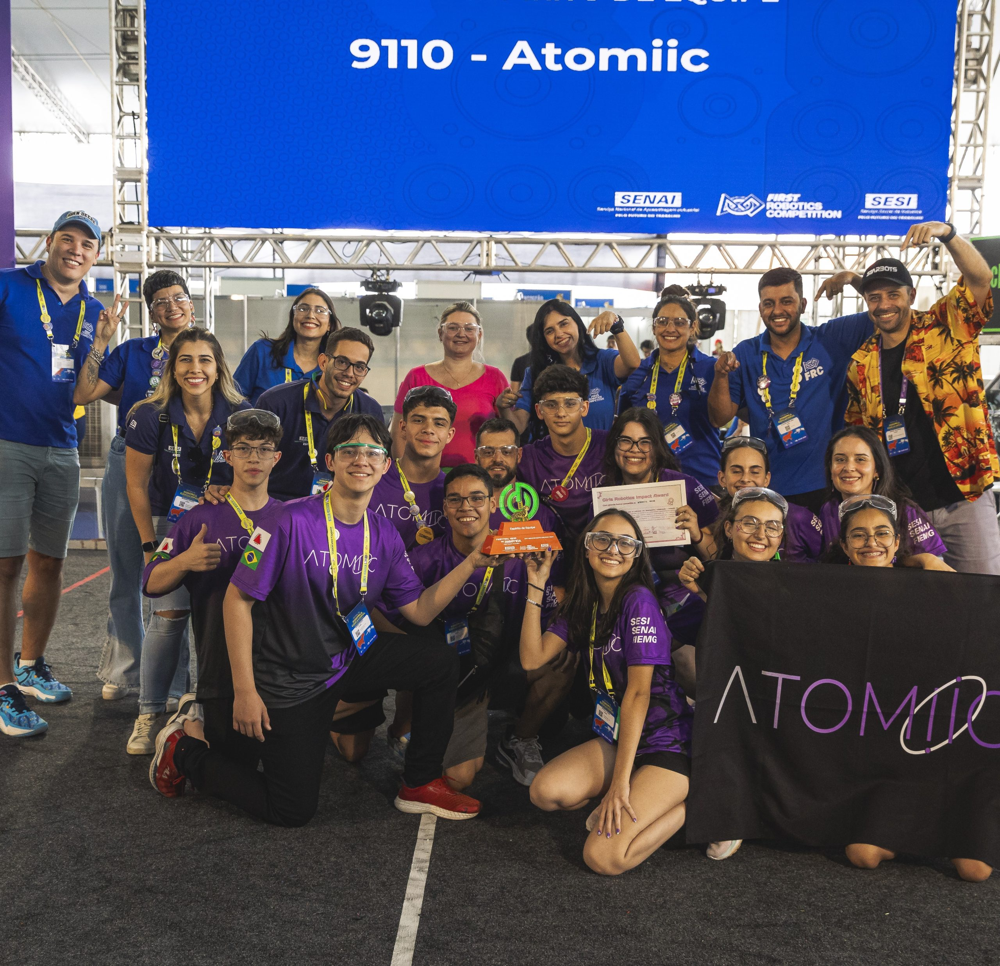
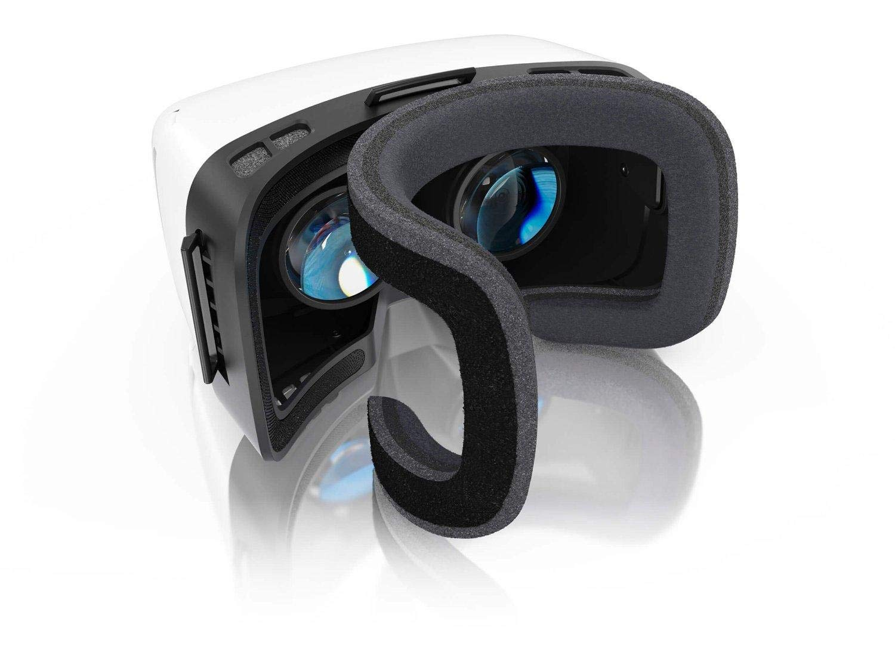
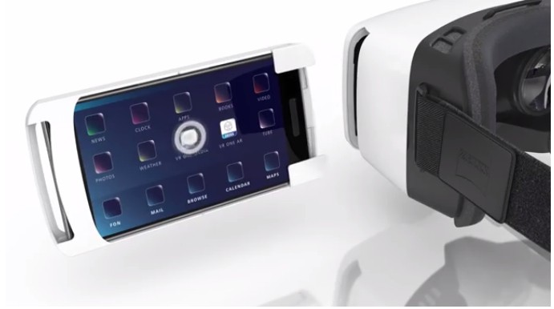
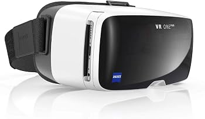
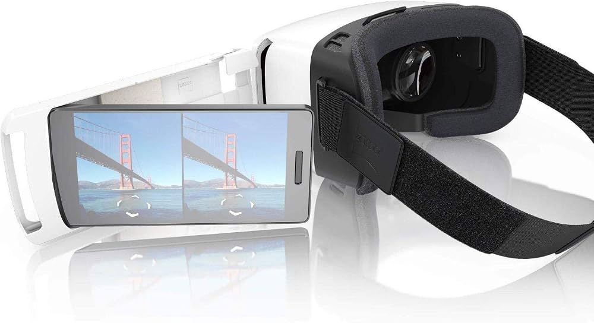

Projetos técnicos
Em cada temporada, a equipe constrói um robô para responder ao desafio da competição.
SENAI São João del-Rei · CFP Sílvio Assunção Teixeira
Conheça a robótica, explore a inovação e descubra o SENAI São João del-Rei por meio de uma experiência em realidade virtual.

EquipamentoZEISS VR ONE Plus
Óptica para smartphone
01 — Educação que constrói
Na unidade SENAI São João del-Rei, formação profissional e tecnologia aproximam teoria, prática e os desafios da indústria.
A robótica transforma conhecimento em protótipos, colaboração e resolução de problemas. É uma linguagem para experimentar, testar e construir novas possibilidades.

Da sala de aula para a arena. Da ideia para o mundo.

02 — FRC Team #9110
A equipe SESI SENAI ATOMIIC #9110 se apresenta como a primeira equipe de FIRST Robotics Competition de Minas Gerais, sediada em São João del-Rei.
Em cada temporada, a equipe constrói um robô para responder ao desafio da competição.
Robótica e STEAM também orientam iniciativas de disseminação do conhecimento.
03 — Mude o ponto de vista
A mesma tecnologia que ensina a construir também nos convida a entrar na experiência.
04 — ZEISS VR ONE Plus
Um headset passivo que usa a tela e os sensores do smartphone para apresentar cenas em 360°.
O scroll abre a composição e revela apenas elementos visíveis nas fotografias originais.
Continue a rolagem — ou volte — para remontar a sequência em qualquer direção.



Role para desmontar
05 — Experiência VR
Uma imagem panorâmica equirretangular envolve o campo de visão. O A-Frame acompanha a orientação do celular para que cada movimento da cabeça revele uma nova direção.
Abrir experiência VR
06 — Galeria de ambientes
A estrutura está pronta para receber os arquivos produzidos pelos grupos. Nenhum ambiente fictício foi usado como se fosse a escola.
Ambiente e descrição serão adicionados após a entrega do grupo responsável.
07 — Como utilizar
Abra o link da experiência no celular.
Aguarde a cena panorâmica aparecer.
Toque no ícone de óculos do A-Frame.
Coloque o celular na bandeja do headset.
Movimente a cabeça para olhar ao redor.
Use em HTTPS para liberar os sensores e o modo imersivo do navegador.
Começar agora